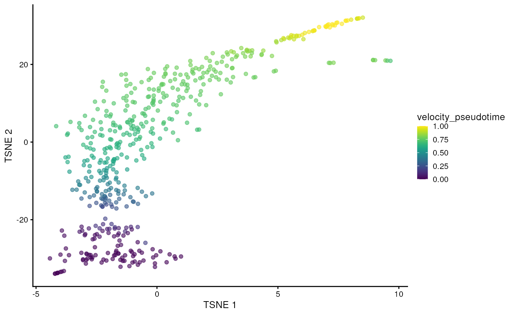
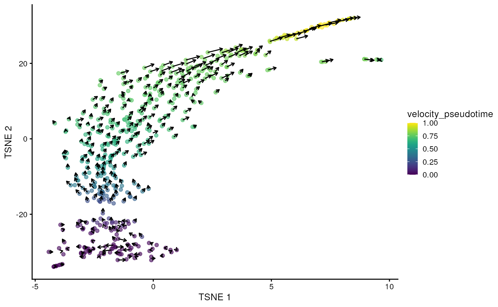

vignettes/velociraptor.Rmd
velociraptor.RmdThis package provides a lightweight interface between the
Bioconductor SingleCellExperiment data structure and the scvelo Python package for RNA
velocity calculations. The interface is comparable to that of many other
SingleCellExperiment-compatible functions, allowing users
to plug in RNA velocity calculations into the existing Bioconductor
analysis framework. To demonstrate, we will use a data set from Hermann et al. (2018), provided via the scRNAseq
package. This data set contains gene-wise estimates of spliced and
unspliced UMI counts for 2,325 mouse spermatogenic cells.
library(scRNAseq)
sce <- HermannSpermatogenesisData()
sce## class: SingleCellExperiment
## dim: 54448 2325
## metadata(0):
## assays(2): spliced unspliced
## rownames(54448): ENSMUSG00000102693.1 ENSMUSG00000064842.1 ...
## ENSMUSG00000064369.1 ENSMUSG00000064372.1
## rowData names(0):
## colnames(2325): CCCATACTCCGAAGAG AATCCAGTCATCTGCC ... ATCCACCCACCACCAG
## ATTGGTGGTTACCGAT
## colData names(1): celltype
## reducedDimNames(0):
## mainExpName: NULL
## altExpNames(0):The full data set requires up to 12 GB of memory for the example usage presented in this vignette. For demonstration purposes, we downsample the data set to the first 500 cells. Feel free to skip this downsampling step if you have access to sufficient memory.
sce <- sce[, 1:500]We assume that feature selection has already been performed by the user using any method (see here for some suggestions). In this case, we will use the variance of log-expressions from scran to select the top 2000 genes.
library(scuttle)
sce <- logNormCounts(sce, assay.type=1)
library(scran)
dec <- modelGeneVar(sce)
top.hvgs <- getTopHVGs(dec, n=2000)We can plug these choices into the scvelo() function
with our SingleCellExperiment object. By default,
scvelo() uses the steady-state approach to estimate
velocities, though the stochastic and dynamical models implemented in scvelo can also be used by
modifying the mode argument.
Note that automatic neighbor calculation is deprecated since scvelo==0.4.0 and will be removed in a future version. Instead, velociraptor computes neighbors with Scanpy (as per scVelo recommendations), and the number of neighbors should be supplied to scanpy.pp.neighbors as demonstrated below.
In particular, the default number of neighbors was 30 for scvelo.pp.moments
while it is 15 for scanpy.pp.neighbors.
Users should use
scvelo.params=list(neighbors=list(n_neighbors=30L) to
reproduce earlier results.
library(velociraptor)
velo.out <- scvelo(
sce, subset.row=top.hvgs, assay.X="spliced",
scvelo.params=list(neighbors=list(n_neighbors=30L))
)## computing moments based on connectivities
## finished (0:00:00) --> added
## 'Ms' and 'Mu', moments of un/spliced abundances (adata.layers)
## computing velocities
## finished (0:00:00) --> added
## 'velocity', velocity vectors for each individual cell (adata.layers)
## computing velocity graph (using 1/4 cores)
## WARNING: Unable to create progress bar. Consider installing `tqdm` as `pip install tqdm` and `ipywidgets` as `pip install ipywidgets`,
## or disable the progress bar using `show_progress_bar=False`.
## finished (0:00:00) --> added
## 'velocity_graph', sparse matrix with cosine correlations (adata.uns)
## computing terminal states
## identified 1 region of root cells and 1 region of end points .
## finished (0:00:00) --> added
## 'root_cells', root cells of Markov diffusion process (adata.obs)
## 'end_points', end points of Markov diffusion process (adata.obs)
## --> added 'velocity_length' (adata.obs)
## --> added 'velocity_confidence' (adata.obs)
## --> added 'velocity_confidence_transition' (adata.obs)
velo.out## class: SingleCellExperiment
## dim: 2000 500
## metadata(4): neighbors velocity_params velocity_graph
## velocity_graph_neg
## assays(6): X spliced ... Mu velocity
## rownames(2000): ENSMUSG00000117819.1 ENSMUSG00000081984.3 ...
## ENSMUSG00000022965.8 ENSMUSG00000094660.2
## rowData names(4): velocity_gamma velocity_qreg_ratio velocity_r2
## velocity_genes
## colnames(500): CCCATACTCCGAAGAG AATCCAGTCATCTGCC ... CACCTTGTCGTAGGAG
## TTCCCAGAGACTAAGT
## colData names(7): velocity_self_transition root_cells ...
## velocity_confidence velocity_confidence_transition
## reducedDimNames(1): X_pca
## mainExpName: NULL
## altExpNames(0):In the above call, we use the "spliced" count matrix as
a proxy for the typical exonic count matrix. Technically, the latter is
not required for the velocity estimation, but scvelo needs to perform a PCA
and nearest neighbors search, and we want to ensure that the neighbors
detected inside the function are consistent with the rest of the
analysis workflow (performed on the exonic counts). There are some
subtle differences between the spliced count matrix and the typical
exonic count matrix - see ?scvelo for some commentary about
this - but the spliced counts are generally a satisfactory replacement
if the latter is not available.
The scvelo() function produces a
SingleCellExperiment containing all of the outputs of the
calculation in Python. Of particular interest is the
velocity_pseudotime vector that captures the relative
progression of each cell along the biological process driving the
velocity vectors. We can visualize this effect below in a
-SNE
plot generated by scater on
the top HVGs.
library(scater)
set.seed(100)
sce <- runPCA(sce, subset_row=top.hvgs)
sce <- runTSNE(sce, dimred="PCA", perplexity = 30)
sce$velocity_pseudotime <- velo.out$velocity_pseudotime
plotTSNE(sce, colour_by="velocity_pseudotime")
It is also straightforward to embed the velocity vectors into our desired low-dimensional space, as shown below for the -SNE coordinates. This uses a grid-based approach to summarize the per-cell vectors into local representatives for effective visualization.
embedded <- embedVelocity(reducedDim(sce, "TSNE"), velo.out)## computing velocity embedding
## finished (0:00:00) --> added
## 'velocity_target', embedded velocity vectors (adata.obsm)
grid.df <- gridVectors(sce, embedded, use.dimred = "TSNE")
library(ggplot2)
plotTSNE(sce, colour_by="velocity_pseudotime") +
geom_segment(data=grid.df, mapping=aes(x=start.1, y=start.2,
xend=end.1, yend=end.2, colour=NULL), arrow=arrow(length=unit(0.05, "inches")))
And that’s it, really.
scvelo() interally performs a PCA step that we can
bypass by supplying our own PC coordinates. Indeed, it is often the case
that we have already performed PCA in the earlier analysis steps, so we
can just re-use those results to (i) save time and (ii) improve
consistency with the other steps. Here, we computed the PCA coordinates
in runPCA() above, so let’s just recycle that:
# Only setting assay.X= for the initial AnnData creation,
# it is not actually used in any further steps.
velo.out2 <- scvelo(sce, assay.X=1, subset.row=top.hvgs, use.dimred="PCA") ## computing moments based on connectivities
## finished (0:00:00) --> added
## 'Ms' and 'Mu', moments of un/spliced abundances (adata.layers)
## computing velocities
## finished (0:00:00) --> added
## 'velocity', velocity vectors for each individual cell (adata.layers)
## computing velocity graph (using 1/4 cores)
## finished (0:00:00) --> added
## 'velocity_graph', sparse matrix with cosine correlations (adata.uns)
## computing terminal states
## identified 3 regions of root cells and 1 region of end points .
## finished (0:00:00) --> added
## 'root_cells', root cells of Markov diffusion process (adata.obs)
## 'end_points', end points of Markov diffusion process (adata.obs)
## --> added 'velocity_length' (adata.obs)
## --> added 'velocity_confidence' (adata.obs)
## --> added 'velocity_confidence_transition' (adata.obs)
velo.out2## class: SingleCellExperiment
## dim: 2000 500
## metadata(4): neighbors velocity_params velocity_graph
## velocity_graph_neg
## assays(6): X spliced ... Mu velocity
## rownames(2000): ENSMUSG00000117819.1 ENSMUSG00000081984.3 ...
## ENSMUSG00000022965.8 ENSMUSG00000094660.2
## rowData names(4): velocity_gamma velocity_qreg_ratio velocity_r2
## velocity_genes
## colnames(500): CCCATACTCCGAAGAG AATCCAGTCATCTGCC ... CACCTTGTCGTAGGAG
## TTCCCAGAGACTAAGT
## colData names(7): velocity_self_transition root_cells ...
## velocity_confidence velocity_confidence_transition
## reducedDimNames(1): X_pca
## mainExpName: NULL
## altExpNames(0):We also provide an option to use the scvelo pipeline without
modification, i.e., relying on their normalization and feature
selection. This sacrifices consistency with other Bioconductor workflows
but enables perfect mimicry of a pure Python-based analysis. In this
case, arguments like subset.row= are simply ignored.
velo.out3 <- scvelo(sce, assay.X=1, use.theirs=TRUE)## WARNING: Did not normalize X as it looks processed already. To enforce normalization, set `enforce=True`.
## WARNING: Did not normalize spliced as it looks processed already. To enforce normalization, set `enforce=True`.
## WARNING: Did not normalize unspliced as it looks processed already. To enforce normalization, set `enforce=True`.
## Logarithmized X.
## computing moments based on connectivities
## finished (0:00:01) --> added
## 'Ms' and 'Mu', moments of un/spliced abundances (adata.layers)
## computing velocities
## finished (0:00:01) --> added
## 'velocity', velocity vectors for each individual cell (adata.layers)
## computing velocity graph (using 1/4 cores)
## finished (0:00:00) --> added
## 'velocity_graph', sparse matrix with cosine correlations (adata.uns)
## computing terminal states
## identified 1 region of root cells and 1 region of end points .
## finished (0:00:00) --> added
## 'root_cells', root cells of Markov diffusion process (adata.obs)
## 'end_points', end points of Markov diffusion process (adata.obs)
## --> added 'velocity_length' (adata.obs)
## --> added 'velocity_confidence' (adata.obs)
## --> added 'velocity_confidence_transition' (adata.obs)
velo.out3## class: SingleCellExperiment
## dim: 54448 500
## metadata(6): log1p pca ... velocity_graph velocity_graph_neg
## assays(6): X spliced ... Mu velocity
## rownames(54448): ENSMUSG00000102693.1 ENSMUSG00000064842.1 ...
## ENSMUSG00000064369.1 ENSMUSG00000064372.1
## rowData names(5): velocity_gamma velocity_qreg_ratio velocity_r2
## velocity_genes varm
## colnames(500): CCCATACTCCGAAGAG AATCCAGTCATCTGCC ... CACCTTGTCGTAGGAG
## TTCCCAGAGACTAAGT
## colData names(11): initial_size_unspliced initial_size_spliced ...
## velocity_confidence velocity_confidence_transition
## reducedDimNames(1): X_pca
## mainExpName: NULL
## altExpNames(0):Advanced users can tinker with the settings of individual scvelo steps by setting named
lists of arguments in the scvelo.params= argument. For
example, to tinker with the behavior of the
recover_dynamics step, we could do:
velo.out4 <- scvelo(sce, assay.X=1, subset.row=top.hvgs,
scvelo.params=list(recover_dynamics=list(max_iter=20)))## computing moments based on connectivities
## finished (0:00:00) --> added
## 'Ms' and 'Mu', moments of un/spliced abundances (adata.layers)
## computing velocities
## finished (0:00:00) --> added
## 'velocity', velocity vectors for each individual cell (adata.layers)
## computing velocity graph (using 1/4 cores)
## finished (0:00:00) --> added
## 'velocity_graph', sparse matrix with cosine correlations (adata.uns)
## computing terminal states
## identified 2 regions of root cells and 1 region of end points .
## finished (0:00:00) --> added
## 'root_cells', root cells of Markov diffusion process (adata.obs)
## 'end_points', end points of Markov diffusion process (adata.obs)
## --> added 'velocity_length' (adata.obs)
## --> added 'velocity_confidence' (adata.obs)
## --> added 'velocity_confidence_transition' (adata.obs)
velo.out4## class: SingleCellExperiment
## dim: 2000 500
## metadata(4): neighbors velocity_params velocity_graph
## velocity_graph_neg
## assays(6): X spliced ... Mu velocity
## rownames(2000): ENSMUSG00000117819.1 ENSMUSG00000081984.3 ...
## ENSMUSG00000022965.8 ENSMUSG00000094660.2
## rowData names(4): velocity_gamma velocity_qreg_ratio velocity_r2
## velocity_genes
## colnames(500): CCCATACTCCGAAGAG AATCCAGTCATCTGCC ... CACCTTGTCGTAGGAG
## TTCCCAGAGACTAAGT
## colData names(7): velocity_self_transition root_cells ...
## velocity_confidence velocity_confidence_transition
## reducedDimNames(1): X_pca
## mainExpName: NULL
## altExpNames(0):## R version 4.4.1 (2024-06-14)
## Platform: x86_64-pc-linux-gnu
## Running under: Ubuntu 22.04.4 LTS
##
## Matrix products: default
## BLAS: /usr/lib/x86_64-linux-gnu/openblas-pthread/libblas.so.3
## LAPACK: /usr/lib/x86_64-linux-gnu/openblas-pthread/libopenblasp-r0.3.20.so; LAPACK version 3.10.0
##
## locale:
## [1] LC_CTYPE=en_US.UTF-8 LC_NUMERIC=C
## [3] LC_TIME=en_US.UTF-8 LC_COLLATE=en_US.UTF-8
## [5] LC_MONETARY=en_US.UTF-8 LC_MESSAGES=en_US.UTF-8
## [7] LC_PAPER=en_US.UTF-8 LC_NAME=C
## [9] LC_ADDRESS=C LC_TELEPHONE=C
## [11] LC_MEASUREMENT=en_US.UTF-8 LC_IDENTIFICATION=C
##
## time zone: UTC
## tzcode source: system (glibc)
##
## attached base packages:
## [1] stats4 stats graphics grDevices utils datasets methods
## [8] base
##
## other attached packages:
## [1] scater_1.33.4 ggplot2_3.5.1
## [3] velociraptor_1.15.8 scran_1.33.1
## [5] scuttle_1.15.4 scRNAseq_2.19.1
## [7] SingleCellExperiment_1.27.2 SummarizedExperiment_1.35.1
## [9] Biobase_2.65.1 GenomicRanges_1.57.1
## [11] GenomeInfoDb_1.41.1 IRanges_2.39.2
## [13] S4Vectors_0.43.2 BiocGenerics_0.51.0
## [15] MatrixGenerics_1.17.0 matrixStats_1.3.0
## [17] knitr_1.48 BiocStyle_2.33.1
##
## loaded via a namespace (and not attached):
## [1] jsonlite_1.8.8 magrittr_2.0.3 ggbeeswarm_0.7.2
## [4] GenomicFeatures_1.57.0 gypsum_1.1.6 farver_2.1.2
## [7] rmarkdown_2.28 fs_1.6.4 BiocIO_1.15.2
## [10] zlibbioc_1.51.1 ragg_1.3.2 vctrs_0.6.5
## [13] memoise_2.0.1 Rsamtools_2.21.1 RCurl_1.98-1.16
## [16] htmltools_0.5.8.1 S4Arrays_1.5.7 AnnotationHub_3.13.3
## [19] curl_5.2.2 BiocNeighbors_1.23.0 Rhdf5lib_1.27.0
## [22] SparseArray_1.5.31 rhdf5_2.49.0 sass_0.4.9
## [25] alabaster.base_1.5.6 bslib_0.8.0 htmlwidgets_1.6.4
## [28] basilisk_1.17.2 desc_1.4.3 alabaster.sce_1.5.1
## [31] httr2_1.0.3 cachem_1.1.0 GenomicAlignments_1.41.0
## [34] igraph_2.0.3 lifecycle_1.0.4 pkgconfig_2.0.3
## [37] rsvd_1.0.5 Matrix_1.7-0 R6_2.5.1
## [40] fastmap_1.2.0 GenomeInfoDbData_1.2.12 digest_0.6.37
## [43] colorspace_2.1-1 AnnotationDbi_1.67.0 dqrng_0.4.1
## [46] irlba_2.3.5.1 ExperimentHub_2.13.1 textshaping_0.4.0
## [49] RSQLite_2.3.7 beachmat_2.21.5 labeling_0.4.3
## [52] filelock_1.0.3 fansi_1.0.6 httr_1.4.7
## [55] abind_1.4-5 compiler_4.4.1 withr_3.0.1
## [58] bit64_4.0.5 BiocParallel_1.39.0 viridis_0.6.5
## [61] DBI_1.2.3 highr_0.11 HDF5Array_1.33.6
## [64] alabaster.ranges_1.5.2 alabaster.schemas_1.5.0 rappdirs_0.3.3
## [67] DelayedArray_0.31.11 rjson_0.2.22 bluster_1.15.0
## [70] tools_4.4.1 vipor_0.4.7 beeswarm_0.4.0
## [73] glue_1.7.0 restfulr_0.0.15 rhdf5filters_1.17.0
## [76] grid_4.4.1 Rtsne_0.17 cluster_2.1.6
## [79] generics_0.1.3 gtable_0.3.5 ensembldb_2.29.1
## [82] metapod_1.13.0 BiocSingular_1.21.2 ScaledMatrix_1.13.0
## [85] utf8_1.2.4 XVector_0.45.0 ggrepel_0.9.5
## [88] BiocVersion_3.20.0 pillar_1.9.0 limma_3.61.9
## [91] dplyr_1.1.4 BiocFileCache_2.13.0 lattice_0.22-6
## [94] rtracklayer_1.65.0 bit_4.0.5 tidyselect_1.2.1
## [97] locfit_1.5-9.10 Biostrings_2.73.1 gridExtra_2.3
## [100] bookdown_0.40 ProtGenerics_1.37.1 edgeR_4.3.13
## [103] xfun_0.47 statmod_1.5.0 UCSC.utils_1.1.0
## [106] lazyeval_0.2.2 yaml_2.3.10 evaluate_0.24.0
## [109] codetools_0.2-20 tibble_3.2.1 alabaster.matrix_1.5.5
## [112] BiocManager_1.30.25 cli_3.6.3 reticulate_1.38.0
## [115] systemfonts_1.1.0 munsell_0.5.1 jquerylib_0.1.4
## [118] zellkonverter_1.15.1 Rcpp_1.0.13 dir.expiry_1.13.0
## [121] dbplyr_2.5.0 png_0.1-8 XML_3.99-0.17
## [124] parallel_4.4.1 pkgdown_2.1.0 blob_1.2.4
## [127] basilisk.utils_1.17.2 AnnotationFilter_1.29.0 bitops_1.0-8
## [130] viridisLite_0.4.2 alabaster.se_1.5.3 scales_1.3.0
## [133] crayon_1.5.3 rlang_1.1.4 cowplot_1.1.3
## [136] KEGGREST_1.45.1